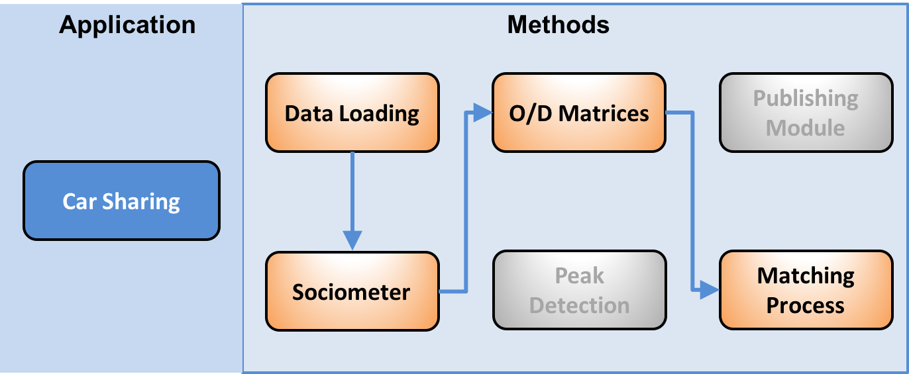
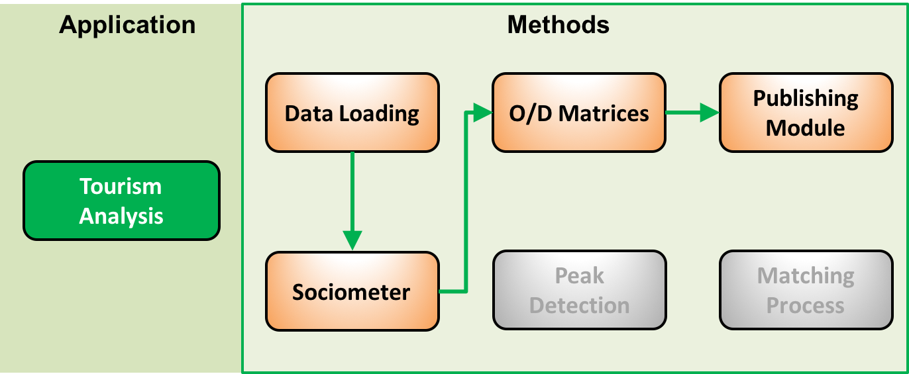
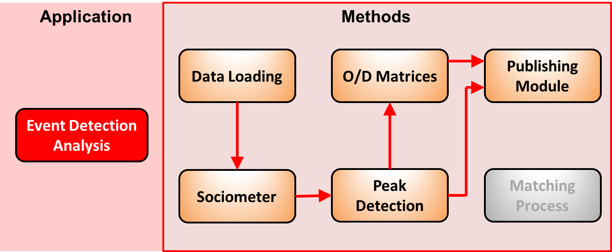

Telecommunication Analytics¶
Introduction¶
- The goal of WIND was to design and implement a new application to take better advantage of
the new big data approach for mobile applications. The ASAP telecommunications application will show how a number of analytical services describing the mobility of people can be created on the basis of the data collected by the mobile network during routine operation. The data we consider in the following is the call data records (CDR). For example a call started in a spatial cell1 and ended in another spatial cell2 will result in a single row in the log as follows: <id32876, 10/10/2015 10:00:00, 5:00, Cell_1, Cell_2, VOICE> containing the id of the user, the type of the event, when the event started, the initial cell, the end cell and the duration. Over this data Wind developed three workflows for three applications:
- Tourism Analysis: The analysis of tourism fluxes highlighting the mobility of a specific kind of users (Visitors) and their seasonality.
- Event Detection analysis: detecting events in a specific area analyzing the different kind of users involved and their origins.
- Car Sharing: Analyzing the systematic movements of users (Commuters) as base for a car sharing recommendation system.
These three applications are realized by means of six basic modules which as shown below:
  Exception made for the Data Loading Module which has the aim of transferring data from Wind servers to ASPA cluster, in the following sections we will describe these six modules and how to execute them.
Sociometer¶
It classifies the users using the presence of cellphone users. In particular, it identifies residents, commuters and visitors. K-means identifies the representative profiles, which are then labeled with the mobility behavior categories just described. Several profiles might be associated to the same category, basically representing different facets of the same class of users. The classification phase assigns each spatio-temporal user’s profile to the closest representative profile based on a proper distance measure. The output is the semantic enrichment of the set of users with tags representing the classification for each user. In ASAP platform this module is composed by three task: User Profiling, K-Means, Classification.
User Profiling¶
The spatio temporal profile is an aggregated representation of the presence of a user in a certain area of interest during different predefined timeslots. This profile is constructed starting from the CDR data and with reference to a particular spatial representation. The CDR spatial coverage describes the distribution of the antennas used by the mobile telecommunications operator on the territory, which can be used to estimate the corresponding coverage. A spatio temporal profile codes the presence of a user in the area of interest in a particular time (or time-slot) identified by the information in the CDR. A spatio-temporal profile codes the presence of a user in the area of interest in a particular time (or time-slot) identified by the information in the CDR. The idea is that if a person makes a call in the area A at time t, it means that he is present in that area at that time.
Run User Profiling sub-module¶
Run: $SPARK_HOME/bin/spark-submit user_profiling.py <dataset path> <spatial region file> <format file> <format date> <area identifier>
Parameter: dataset path: path on hdfs where the dataset is located spatial region file: csv files with the association GSM antenna –> spatial region field2col: file containing the format of the csv files composing the dataset format date: the date format (according to python datetime module) of the cdr area identifier: a string used to name the results files
- Output: profiles will be saved in this path: /profiles/<area identifier>-<year>_<week>. Week is the first week of the corresponding
- 4 weeks block analyzed. These two parameters are computed inside the script, by scanning all the dataset and assigning each file to the corresponding week.
Typical profiles computation (clustering, centroids extractions and classification)¶
To group users according to their spatio-temporal profile, looking for typical profiles, we use k-means clustering algorithm. We aim to group users into 100 groups (k=100), and we use euclidean distance to compare two profiles. Once found typical profiles, we compare them with a set of labeled stereotypes, representing the typical behaviors for each user category we are interested to. As an instance, the typical profile of a resident user in particular area would require the user to make calls from that area everyday at every possible time.
Run Profiles Computation¶
Run: $SPARK_HOME/bin/spark-submit clustering.py <dataset path> <area identifier>
Parameter: dataset path: path on hdfs where the dataset is located area identifier: the string used during the profiling step.
Output: The script loads all the profiles, for each block of 4 weeks, clusters them, finds the centroids, assign a label to each centroid and save them to the HDFS path /centroids/<area identifier>-<year>_<week>
Users Classification¶
The typical profiles computation returns a set of profiles with their relative label. So, we now need to assign the proper label to each one of the the user profile, for each one of the areas she visited.
Run Users Classification¶
$SPARK_HOME/bin/spark-submit stereo_type_classification.py <dataset path> <area identifier>
Parameter: dataset path: path on hdfs where the dataset is located area identifier: the string used during the profiling step. The script loads all the profiles, assign each profile to the nearest centroids and save users label.
Output: -user annotation, saved on /annotation/<area identifier>-<year>_<week> -area presence composition: saved on local file system, on ./results/sociometer-<area identifier>-<year>_<week>.csv
Users labeling:
Next use cases take advantage of users labeling made from Sociometer. Hence, we provide a script to get a csv file with data in the format (user_id,area)-> label
Run Users labeling¶
Run : $HADOOP_HOME/bin/hadoop fs -get /annotation/<area identifier> . cat annotation-<area identifier>/part* > user_annotation.csv
Peak Detection¶
This analysis detects relevant peaks representing an event. This is achieved by comparing the density of population (measured in calls) within a region in a given moment against the expected density for that area at that hour of the day. The overall analysis is decomposed in two sub tasks: the Timeseries Computation and the Anomalies Detection. Timeseries for each area and user category are the baseline to define the expected presences for each time-slot. Then, each datapoint, that is the hourly presence at a given time for a given category in a certain area, is compared among the expected hourly presence.
Run Peak Detection¶
Run: $SPARK_HOME/bin/spark-submit presence.py <region of interest> <user label annotation>
Parameter: <region of interest> : a mapping in the form of antenna : region of interest <user label annotation> : the user2label.csv computed previously
O/D Matrices¶
Based on the result of the sociometer it is possible to build a matrix of flows considering the as “home” the area where a user is classified as Resident or dynamic Resident.
Run O/D Matrices¶
Run: $SPARK_HOME/bin/spark-submit od.py <region of interest> <user label annotation>
Parameter: <region of interest> : a mapping in the form of antenna : region of interest <user label annotation> : the user2label.csv computed previously
Matching Process¶
The matching process is a visual analytic module, which is a standard module of ASAP platform. In fact it is realized by an aggregation of the results obtained by the Sociometer and the O/D Matrix with a lower granularity (morning, afternoon, evening, night). In this way each user will be profiled in terms of their movement between first and second most frequent locations. Then a graph is build considering this information to link two users. At this point the visual graph analytic is able to discover communities, or check for each user which are the possible candidates for car sharing. Those analytical tools for graph are available also in Mllib and than are easy to use in the platform.
Publishing Module¶
This module is responsible of sending data to the WebLyzard platform, it makes only data format transformation and communication.
Run Publishing module¶
Sociometer publishing: python socio_publisher.py <area_identifier> Peak detection publishing: python presence_publisher.py <area_identifier> O/D matrices: python od_publisher.py <area_identifier>
Then, data need to be uploaded to weblyzard platform with: python sociometer_uploader.py